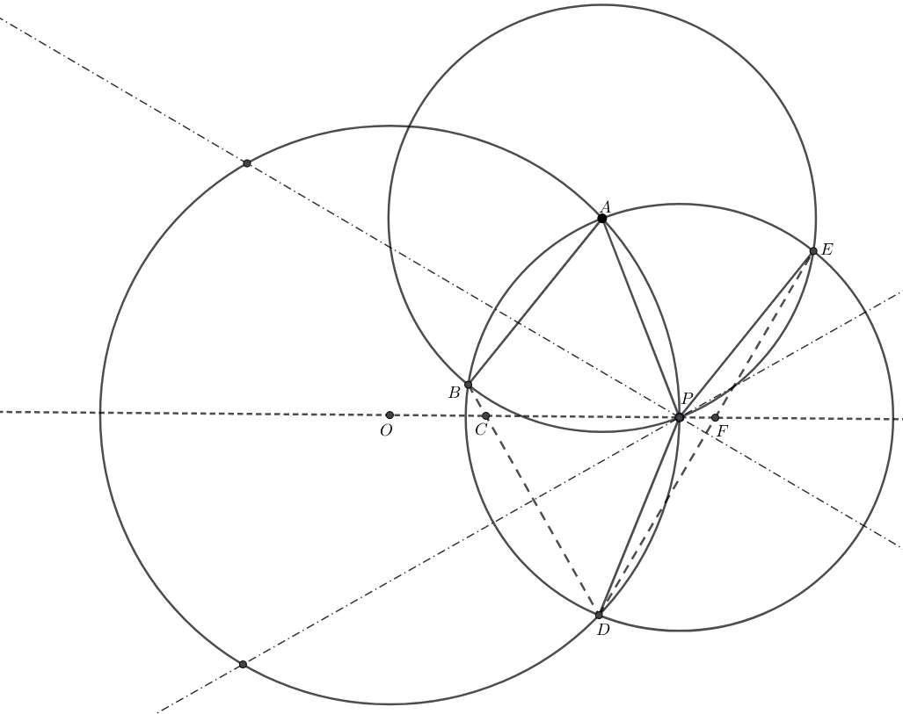

Euclidea gives me Chlamydia!
Task: construct an inscribed equilateral triangle inside a circle given the circle and one vertex. (no center!)

Click for full size!
Given: circle $O$ and point $P$ on circle $O.$ Minimize total steps!
- Construct a circle centered at $P$ of arbitrary size that intersects circle $O$ at points $A$ and $D.$
- Construct a circle centered at $A$ that goes through point $P$
- Circles $A$ and $P$ intersect at points $B$ and $E.$ Construct the perpendicular bisector of $BD.$
- Construct the perpendicular bisector of $ED.$
- Draw the last line of the triangle!
Proof:
Note that $\angle ABC = \angle ABD = \dfrac{1}{2}\widehat{AED}.$ Furthermore, $\angle APC = \dfrac{1}{2}\widehat{ABD}.$ Hence, $\angle ABC + \angle APC = \dfrac{1}{2}(\widehat{AED} +\widehat{ABD}) = 180^{\circ}.$ Hence, $\angle BAP + \angle BCP = 180^{\circ}.$ By definition, triangle $BAP$ is equilateral, so $\angle BAP = 60^{\circ}.$ Hence, $\angle PCD = 60^{\circ}.$ Thus, the perpendicular bisector of $CD$ makes an angle $30^{\circ}$ with $OP.$
Note that $\angle AEF = \angle AED = \dfrac{1}{2}\widehat{ABD}.$ Furthermore, $\angle APF = \dfrac{1}{2}\widehat{AED}.$ By the same logic as above, using the fact that $AEP$ is equilateral, we know $\angle CFD = 60^{\circ}.$ Hence, the perpendicular bisector of $DE$ makes an angle $30^{\circ}$ with $OP.$
{kind=link}